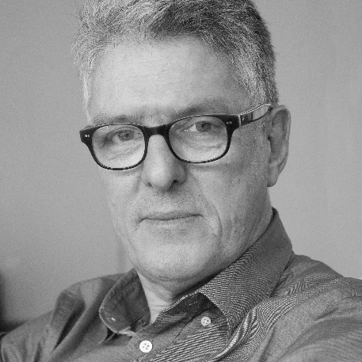
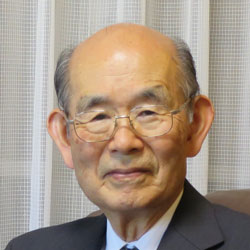

History Of Computer Vision
Scientists and engineers have been trying to develop ways for machines to see and understand visual data for about 60 years. Experimentation began in 1959 when neurophysiologists showed a cat an array of images, attempting to correlate a response in its brain. They discovered that it responded first to hard edges or lines, and scientifically, this meant that image processing starts with simple shapes like straight edges.
At about the same time, the first computer image scanning technology was developed, enabling computers to digitize and acquire images. Another milestone was reached in 1963 when computers were able to transform two-dimensional images into three-dimensional forms. In the 1960s, AI emerged as an academic field of study, and it also marked the beginning of the AI quest to solve the human vision problem.
1974 saw the introduction of optical character recognition (OCR) technology, which could recognize text printed in any font or typeface. Similarly, intelligent character recognition (ICR) could decipher hand-written text using neural networks. Since then, OCR and ICR have found their way into document and invoice processing, vehicle plate recognition, mobile payments, machine translation and other common applications.
In 1982, neuroscientist David Marr established that vision works hierarchically and introduced algorithms for machines to detect edges, corners, curves and similar basic shapes. Concurrently, computer scientist Kunihiko Fukushima developed a network of cells that could recognize patterns. The network, called the Neocognitron, included convolutional layers in a neural network.
 
By 2000, the focus of study was on object recognition, and by 2001, the first real-time face recognition applications appeared. Standardization of how visual data sets are tagged and annotated emerged through the 2000s. In 2010, the ImageNet data set became available. It contained millions of tagged images across a thousand object classes and provides a foundation for CNNs and deep learning models used today. In 2012, a team from the University of Toronto entered a CNN into an image recognition contest. The model, called AlexNet, significantly reduced the error rate for image recognition. After this breakthrough, error rates have fallen to just a few percent.